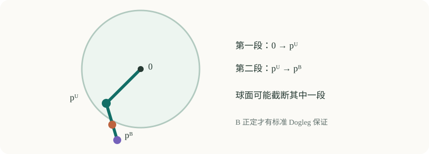

4.1.3 Dogleg 方法：在两段折线中选择信赖域步
当二次模型的 B 对称正定，Dogleg 用最速下降点和 Newton 点构成一条折线。半径小就截在负梯度方向，半径适中就与第二段相交，半径足够大则取完整 Newton 步。
两段折线的两个关键节点
模型 m(p)=fₖ+gᵀp+½pᵀBp；当 B 正定时，无约束极小点 pᴮ=−B⁻¹g。同时，沿负梯度进行不受半径限制的一维极小化，得到 pᵁ=−(gᵀg)/(gᵀBg)g。
Dogleg 路径先从 0 走到 pᵁ，再沿直线走到 pᴮ。若球中能容纳完整 Newton 步，就不需要截断；否则求折线与球边界的交点。
半径的三个区间
若 Δ≤‖pᵁ‖，取第一段与球面交点 p=−Δg/‖g‖；若 ‖pᵁ‖＜Δ＜‖pᴮ‖，取 p=pᵁ+τ(pᴮ−pᵁ)，其中 τ∈(0,1) 且 ‖p‖=Δ。
若 Δ≥‖pᴮ‖，直接返回 Newton 点。正定 B 使模型沿 Dogleg 路径下降，因此所选步的模型下降至少不差于 Cauchy 点。

二维具体计算
取 g=(2,2)、B=diag(4,1)。得到 pᵁ=(−0.8,−0.8)，‖pᵁ‖≈1.1314；pᴮ=(−0.5,−2)，‖pᴮ‖≈2.0616。
Δ=1.3 时，求第二段与球面交点，可得约 p=(−0.7313,−1.0748)，模型下降约 1.9650。Δ=1 时则从负梯度第一段截断；Δ=2.5 时使用 pᴮ。
为什么球面交点只需解一个一元二次方程
令 d=pᴮ−pᵁ，展开 ‖pᵁ+τd‖²=Δ²，得到 (dᵀd)τ²+2(pᵁᵀd)τ+(‖pᵁ‖²−Δ²)=0。选出 τ∈[0,1] 的非负根即可。
必须检查判别式与根范围；在极端半径或浮点误差下，接近零的负判别式需要谨慎处理，而不能无条件开方。
正定性和外层接受不能省略
若 B 不定，所谓 Newton 点可能不是二次模型的极小点，Dogleg 两段单调下降的理由就会失效。此时应考虑负曲率处理、修正矩阵或其他信赖域子问题方法。
Dogleg 给出预测下降，真正的优化还须比较 f(x+p) 和模型预测值，再决定是否接受以及如何调整 Δ。
交互：改变参数并观察模型下降
调节半径，注意三种策略何时切换；即使 Dogleg 步位于球内，也不代表真实目标必定接受它。
实时模型计算
Python：模型与断言交叉验证
完整代码仅依赖 Python 标准库；可独立运行，包含数值断言。
"""Dogleg solution for B=diag(4,1), g=(2,2)."""
from math import sqrt, hypot
U=(-0.8,-0.8)
P=(-0.5,-2.0)
def reduction(p):
x,y=p
return -(2*x+2*y+0.5*(4*x*x+y*y))
def dogleg(radius):
if radius <= 0:
raise ValueError("radius must be positive")
nu,nb=hypot(*U),hypot(*P)
if radius <= nu:
return (-radius/sqrt(2),-radius/sqrt(2)), "first"
if radius >= nb:
return P,"Newton"
d=(P[0]-U[0],P[1]-U[1])
A=d[0]**2+d[1]**2
B=2*(U[0]*d[0]+U[1]*d[1])
C=U[0]**2+U[1]**2-radius**2
t=(-B+sqrt(B**2-4*A*C))/(2*A)
assert 0 <= t <= 1
return (U[0]+t*d[0],U[1]+t*d[1]),"second"
if __name__ == "__main__":
for r in (0.8,1.3,2.5):
p,phase=dogleg(r)
print(r,phase,p,reduction(p))
assert hypot(*p)<=r+1e-10 and reduction(p)>0
p,phase=dogleg(1.3)
assert phase=="second"
assert abs(reduction(p)-1.9650065164267754)<1e-9